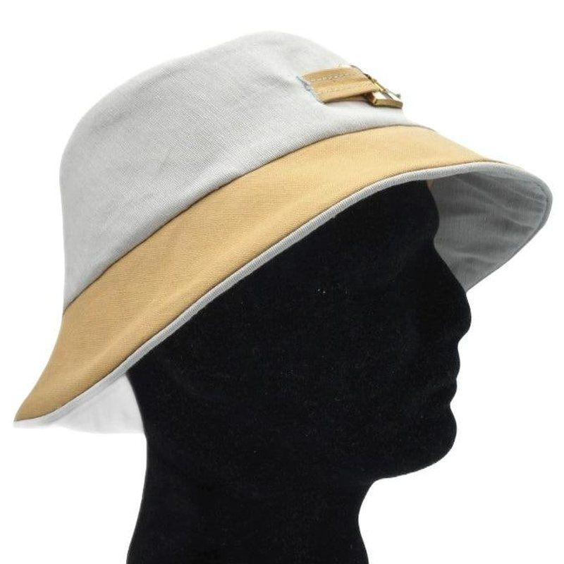
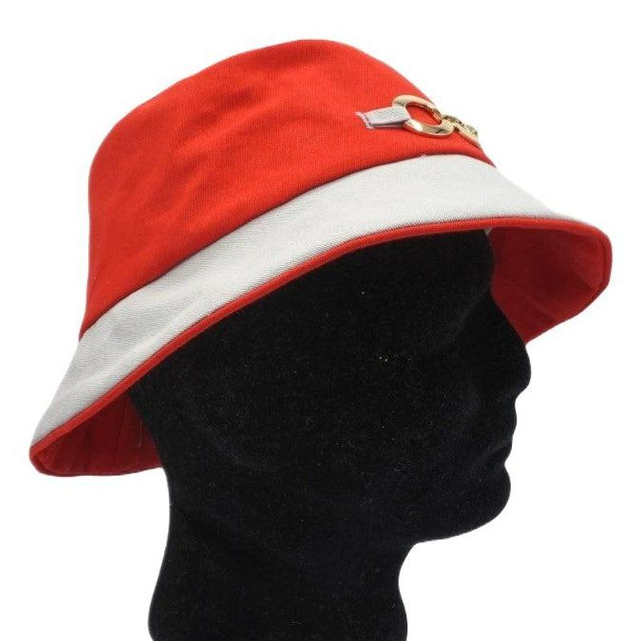
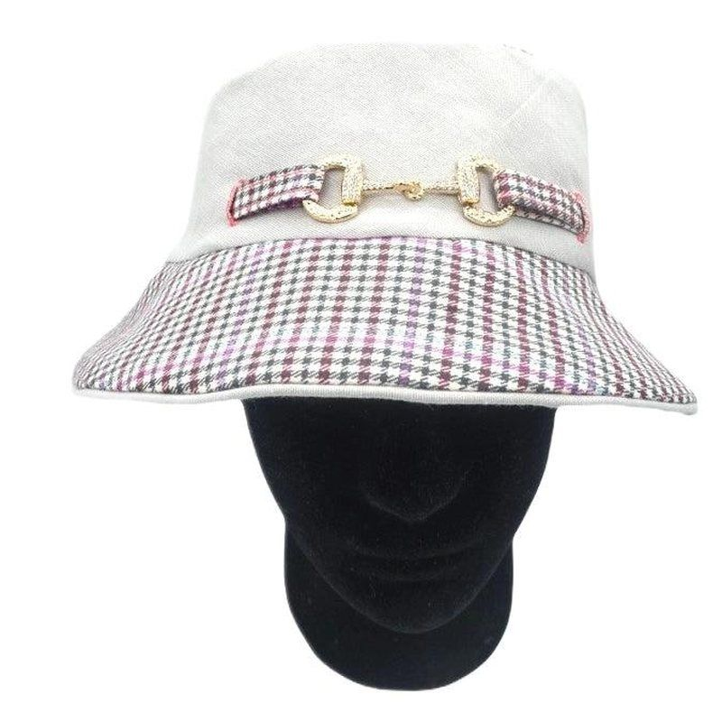
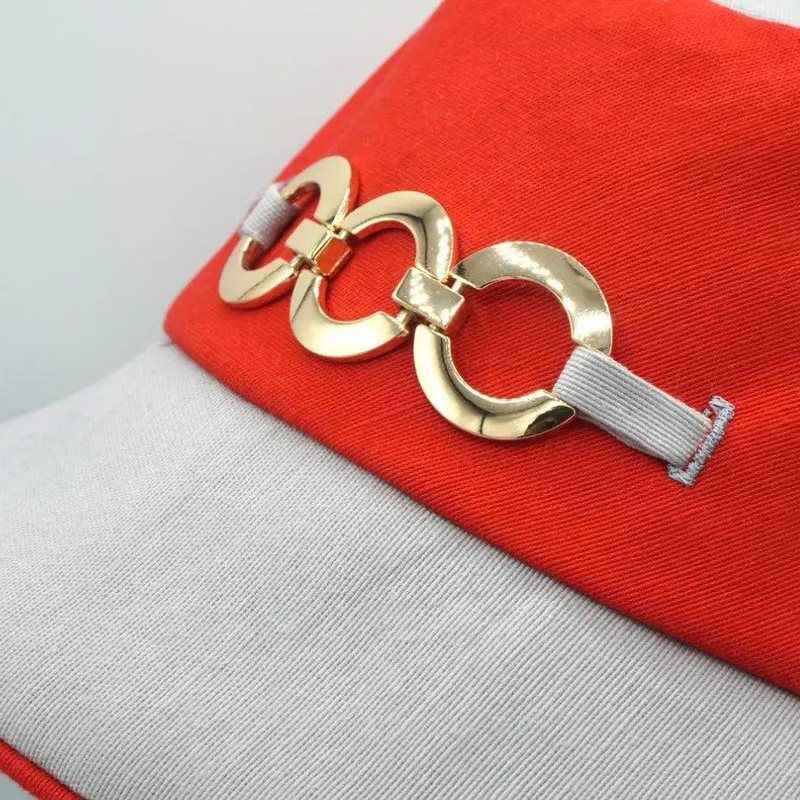
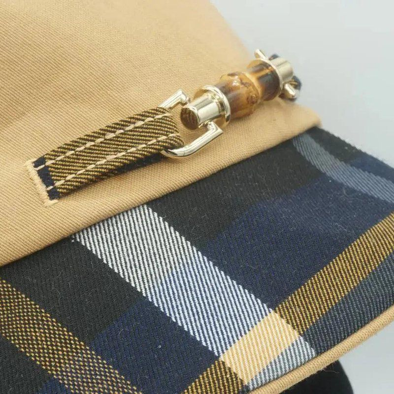
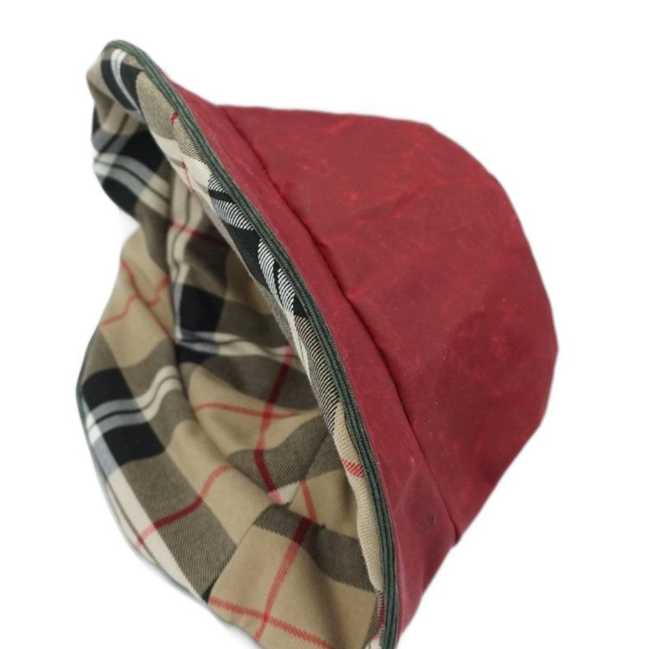
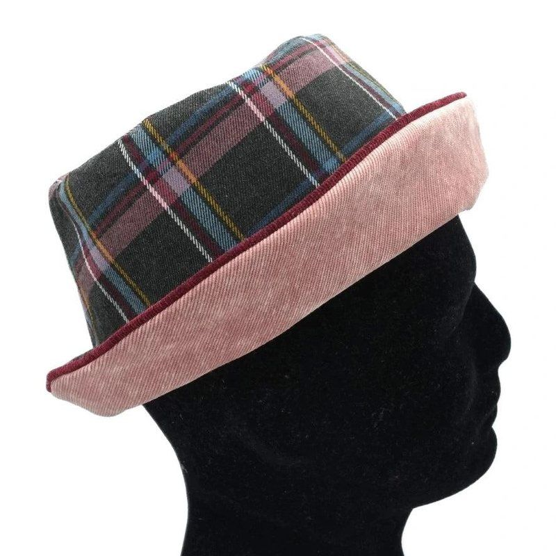
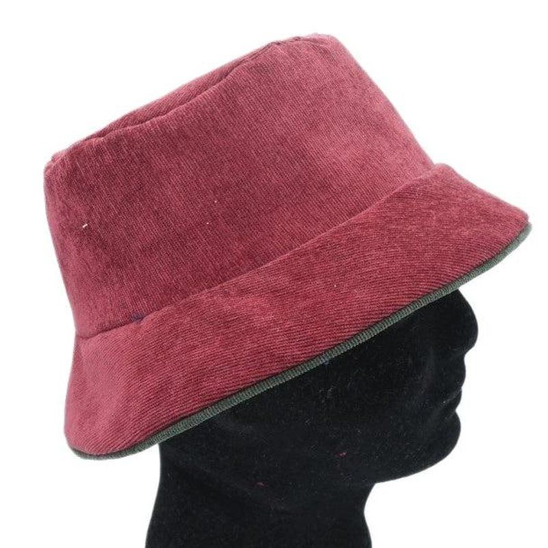
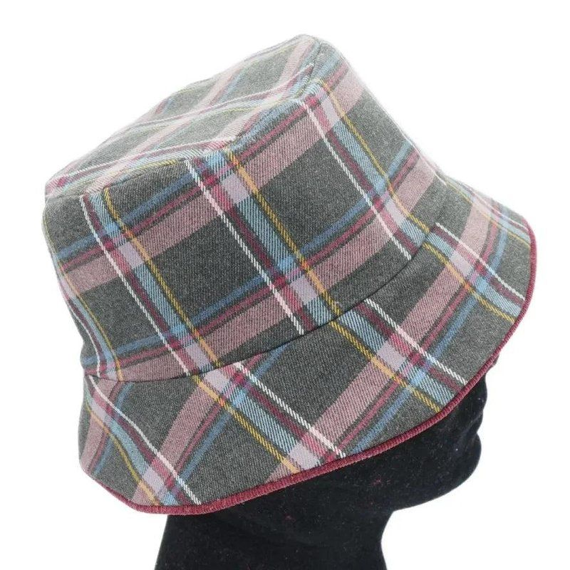

Bob : idées de style
Un bob se joue des tissus : un uni contre un motif, deux couleurs franches, un passepoil qui fait le lien, une boucle sur une patte. Voici des bobs que j'ai cousus, rangés par idée, pour vous donner envie d'essayer.
Ces bobs ont été réalisés dans le cadre d'un projet commercial qui n'a finalement pas abouti. Ils sont présentés ici comme source d'inspiration pour vos propres créations.
Deux tissus, deux ambiances
La calotte et le bord n'ont pas besoin d'être dans le même tissu. Un uni clair face à un tissu à motif, ou deux couleurs franches : le chapeau change complètement d'allure. Avec un écossais ou un pied-de-poule, soignez le raccord des motifs aux coutures : c'est ce qui fait la différence.




Boucles et fermoirs
Une boucle de chaussure ou un fermoir de sac, monté sur une petite patte de tissu cousue sur la calotte, donne tout de suite du chic. La patte reprend l'un des tissus du chapeau pour faire le lien. Choisissez une boucle plutôt légère, pour que la calotte ne se déforme pas.




Réversibles et passepoils
Un bob réversible, ce sont deux chapeaux en un : on le retourne selon l'humeur ou le temps. Le passepoil de contraste, au bord, souligne la forme et marque la jonction des deux faces. Choisissez-le dans l'une des couleurs des deux tissus. Pour la couture, voir le guide du bob.




Matières
Le coton ciré pour la pluie, le velours côtelé pour l'hiver, un écossais ou un petit damier pour le caractère : le même bob prend un autre air selon le tissu. Faites un essai sur un reste de tissu avant de couper, car chaque matière se comporte différemment.




Vidéos
Ces bobs sont présentés dans deux vidéos. Elles sont en anglais, avec des sous-titres français disponibles. Leur ton est commercial : elles datent du projet abandonné évoqué plus haut.